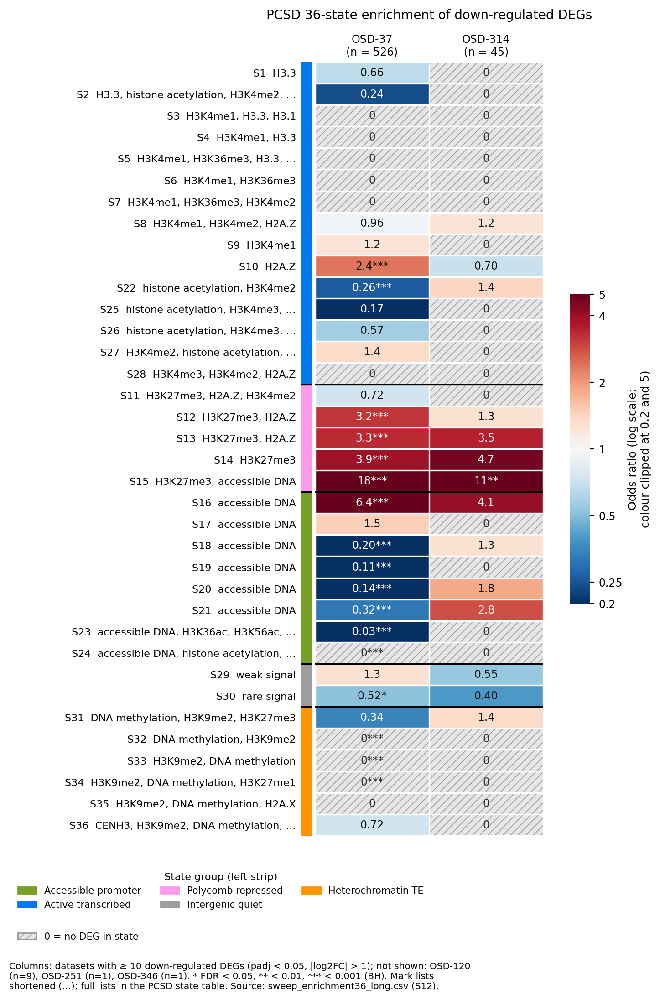
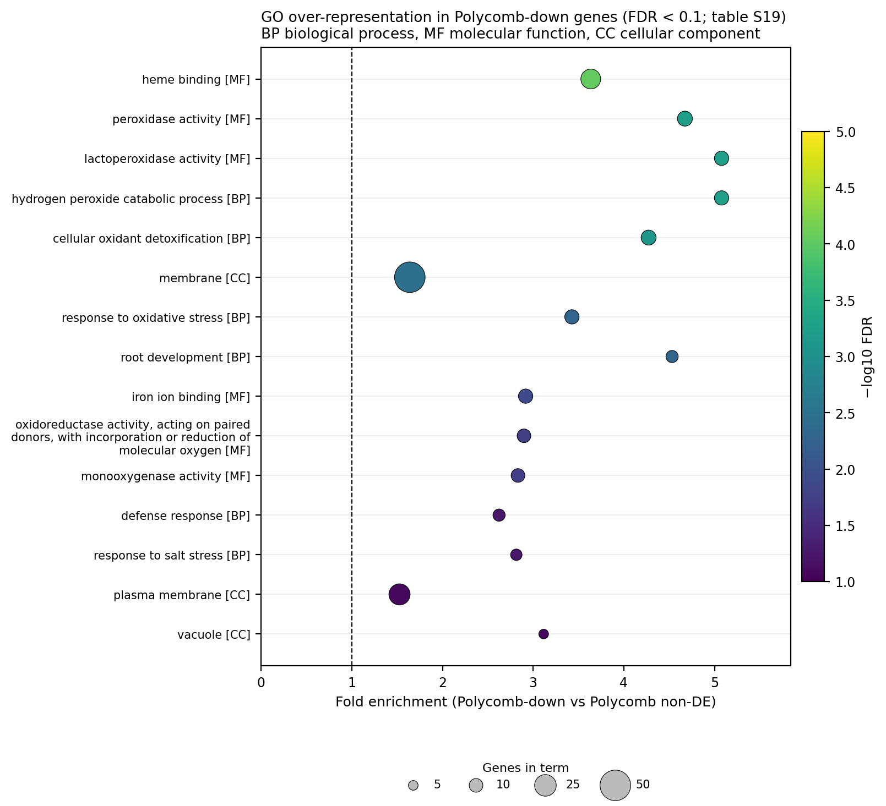
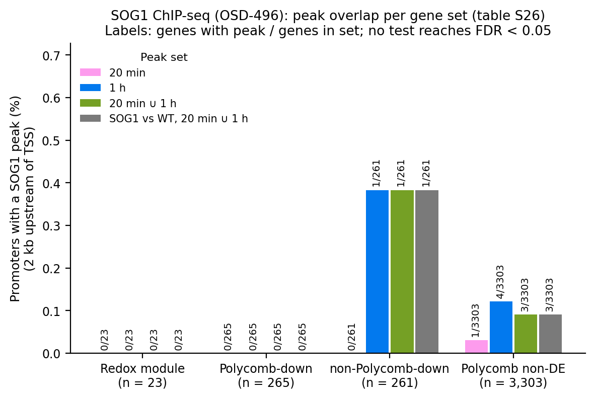
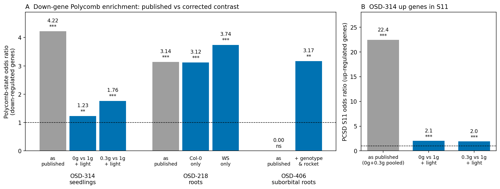
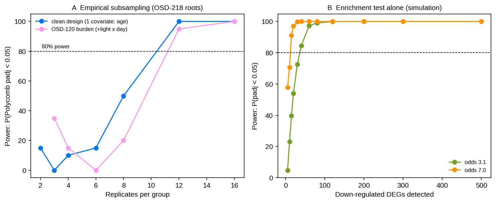

Expression-to-chromatin decoding of the Arabidopsis spaceflight transcriptome
No spaceflight chromatin assay exists for any plant. ChromDecode-At sidesteps that gap. It maps every Arabidopsis gene to its ground-state chromatin context and tests whether the genes spaceflight changes are concentrated in particular chromatin classes. Applied to the Arabidopsis RNA-seq datasets in NASA's Open Science Data Repository (OSDR), it shows that spaceflight-repressed genes sit in Polycomb (H3K27me3) chromatin.
Odds 8.0
OSD-37 flight-repressed genes in the AraENCODE Repression state (FDR 3×10⁻¹⁰⁵); PCSD S15 odds 18.0.
2 ecotypes
The bias replicates in ISS-grown roots: Col-0 odds 3.06 (OSD-193) and 3.12 (OSD-218), and WS 3.74.
0 / 265
SOG1 ChIP-seq peaks at Polycomb-down promoters after DNA damage (OSD-496): not a SOG1 damage response.
~9–12
Replicates per group needed for a stable root-level test; most OSDR root studies fall short.
Approach
The decoder works from coordinates, not from a learned model. Each gene's TSS-anchored region (gene body + 2 kb upstream) is assigned a chromatin state from two independent annotations, and differentially expressed genes are tested for state enrichment by Fisher's exact test with BH-FDR. A learned expression→state model was tried and failed honestly (block-CV accuracy 0.533 against a 0.549 baseline), which is why the deterministic backbone carries the analysis.
Results
1 · Flight-repressed genes concentrate in Polycomb chromatin
replicatedIn OSD-37 seedlings (four ecotypes; 529 up / 526 down), down-regulated genes are enriched for Polycomb_repressed chromatin (5-group odds 7.01, FDR 1.7×10⁻⁹²) and for the AraENCODE Repression state (odds 8.0). At 36-state resolution they converge on the H3K27me3 + accessible-promoter block: S15 18.0, S16 6.4, S14 3.9, S13 3.3. Of the 526 down genes, 265 sit in Polycomb states S11–S15. Constitutive heterochromatin is inert in both directions.

2 · The repressed class is a redox/peroxidase module
specificAgainst the genome, 18 GO terms are significant, led by peroxidase activity (11.1×), hydrogen peroxide catabolism (13.6×) and heme binding (7.2×). Against a state-matched Polycomb control, 11 remain, so the flight-repressed subset is functionally distinct within the Polycomb class. Its promoters are rich in AT-hook (AHL) and ZHD motifs, but no motif survives the state-matched comparison: the motif layer tracks the state, not the response.

3 · No methylation change, and no SOG1 binding
nullOSD-217 WGBS (Wassilewskija, Ws; root and leaf) shows no flight-induced methylation change at the module that survives correction (minimum padj 0.07 gene body, 0.099 promoter). In OSD-496 (SOG1-3xFLAG after bleomycin), no SOG1 peak falls in a redox-module promoter (0/23) or a Polycomb-down promoter (0/265) at either timepoint. The spaceflight repression is therefore not a recapitulation of SOG1's direct DNA-damage targets.

4 · The bias replicates in ISS-grown roots
replicatedSample conditions for OSD-193 and OSD-218 were recovered from NCBI BioSample. With age as a covariate, Polycomb-state odds for down-regulated root genes are 3.06 in OSD-193 Col-0 (padj 2.2×10⁻¹⁰), 3.12 in OSD-218 Col-0 (padj 7.6×10⁻¹¹) and 3.74 in OSD-218 WS (padj 6.5×10⁻⁷), about half the seedling effect. OSD-624, a suborbital flight, is null.

code/qc_figure.py).5 · Power and design
design limitSubsampling OSD-218 suggests about 9–10 replicates per group for 80% power in a clean design, and 11–12 with OSD-120's light × day covariates. OSD-120's Col-0 contrast (6 v 6) sits at about 10–15% power. A stratified flight × light analysis bounds the interaction but cannot resolve it.

Pre-submission audit
Before submission, every dataset's design was re-read from its OSDR study record. The analysis was then re-run from the public counts with the original pinned environment, and it reproduced the archived numbers exactly. The audit found four sample-coding or labelling errors, all corrected in the manuscript:
| Dataset | Problem | After correction |
|---|---|---|
| OSD-314 | Mars-gravity (0.3g) arm pooled into "0G" | Same direction, much smaller effect (S11 up-gene odds 22.4 → ~2.0) |
| OSD-218 | 16 Wassilewskija (WS) samples labelled Col-0 | Odds unchanged, now attributed to two ecotypes |
| OSD-406 | Three genotypes and two rockets pooled | Odds 3.17 with covariates (discovery level) |
| OSD-624 | Described as orbital | Virgin Galactic suborbital flight |
A stale 5-group sweep table was replaced, a column-order bug that misplaced significance stars in one heatmap was fixed, and a wrong GEO accession for the SOG1 data was corrected (GSE112529). All references were checked against Crossref.
Conclusions
- The Polycomb-state bias of spaceflight repression is robust across datasets, tissues, ecotypes and state resolutions.
- The repressed genes form a redox/peroxidase module that is distinguishable by function, but not by motif, within the Polycomb class.
- The mechanism is not the canonical SOG1 damage pathway, and DNA methylation does not detectably change, so the upstream regulator remains unidentified.
- The decisive next experiment is a spaceflight H3K27me3 ChIP-seq or CUT&RUN assay with ≥10 replicates per group.
Limitations. All chromatin states are ground-state annotations, so the decoder tests enrichment in pre-existing states, not dynamic mark changes. OSD-193 and OSD-218 share a payload. Motif and GO results are correlative. All results are discovery-only.
Code & data
| Folder | Contents |
|---|---|
code/ | Analysis scripts (chromdecode.py is the core module), QC re-runs, HPC provenance |
supplementary_tables/ | Tables S1–S57 (CSV) with an index of content, producing script and section |
figures/ | All figures, SVG + PNG |
manuscript/ | LaTeX manuscript and supplement, Crossref-verified bibliography, figure audit |
DATA_SOURCES.md | Every public input (OSDR, PCSD, AraENCODE, PlantCADB, JASPAR, GO, SRA) |
Source data are public and not redistributed. Zenodo DOI: to be assigned on first release.